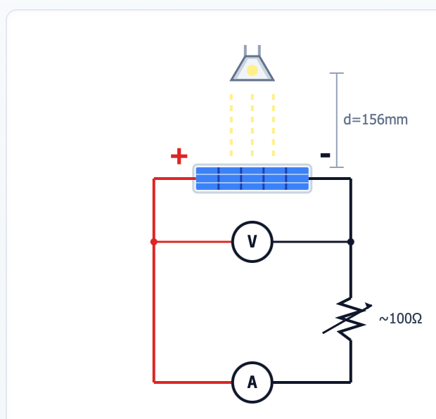
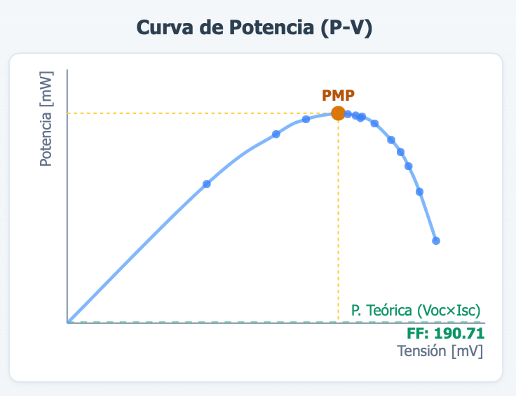
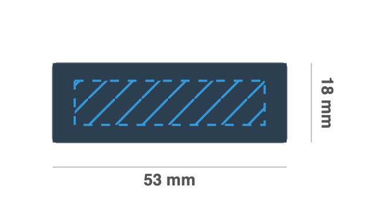
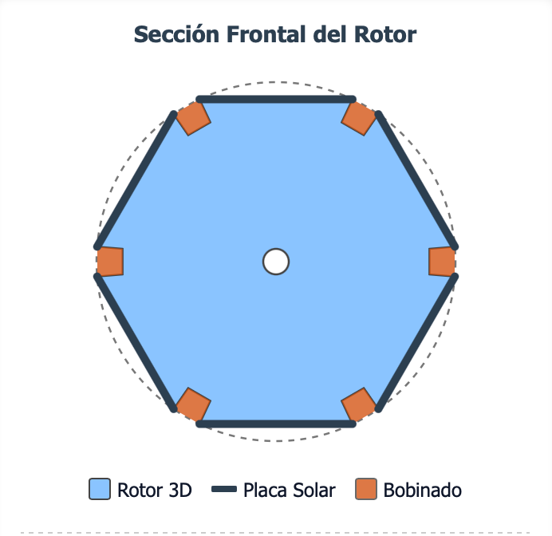
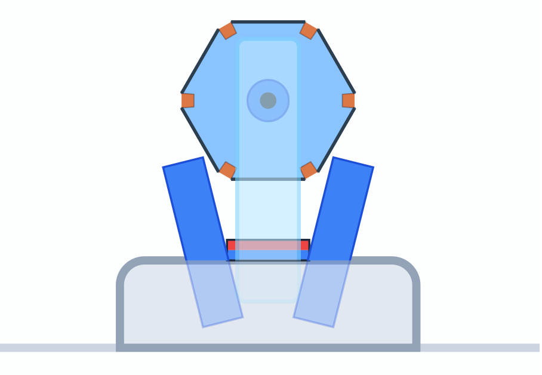
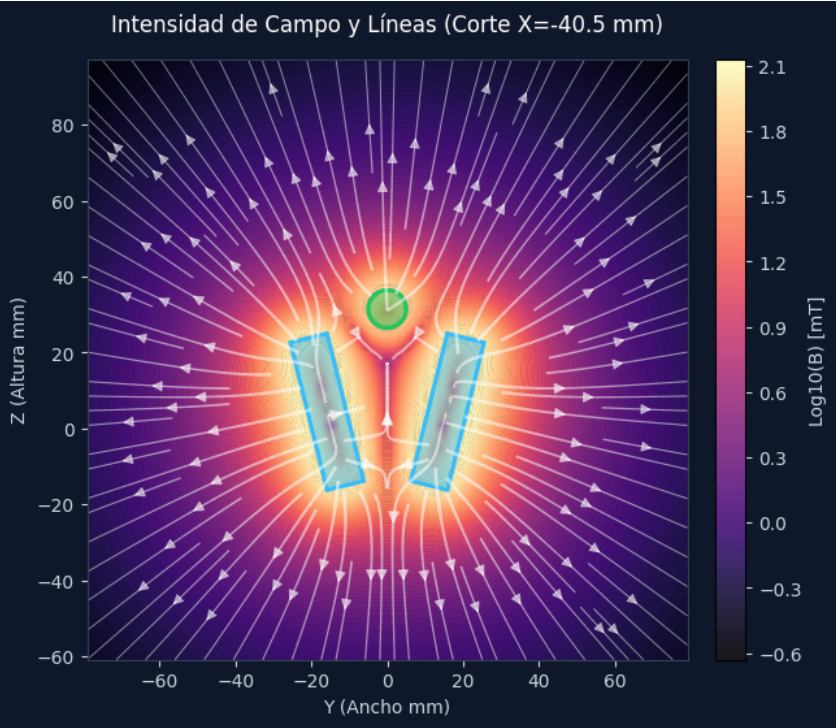
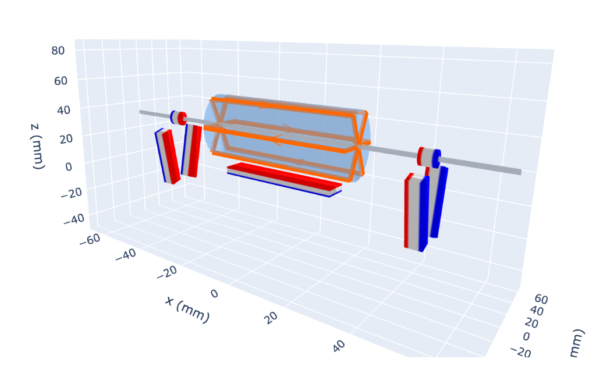
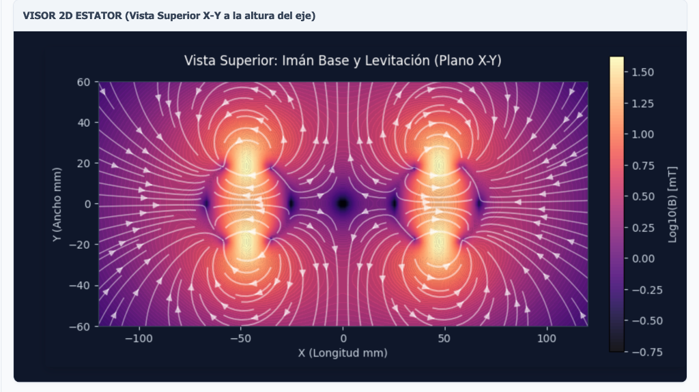

Manual de Usuario Avanzado y Fundamentos Teóricos: Simulador de Motores Mendocino
Este manual constituye la guía definitiva para comprender no solo el manejo del Simulador de Motores Mendocino, sino también los profundos principios físicos y matemáticos que rigen cada uno de sus cálculos. Está diseñado para estudiantes, ingenieros y entusiastas que deseen profundizar en la electrodinámica, la mecánica y la geometría aplicada a este fascinante motor solar levitado.
1. Introducción Teórica al Motor Mendocino
El motor Mendocino es una máquina eléctrica que destaca por dos características singulares: levitación magnética pasiva y conmutación óptica pasiva.
A diferencia de los motores convencionales que utilizan escobillas mecánicas o conmutadores electrónicos (controladores brushless), el motor Mendocino utiliza paneles solares montados en el propio rotor. La luz incidente (por ejemplo, el sol) activa únicamente el panel que se encuentra iluminado en ese instante. Este panel inyecta corriente en la bobina diametralmente opuesta, generando un campo electromagnético que interactúa con un imán permanente situado en la base, produciendo el par motriz. Al girar, un nuevo panel entra en la zona de luz, conmutando la corriente de forma continua y natural.
Para minimizar la fricción y permitir que potencias tan diminutas (del orden de milivatios) logren hacer girar el sistema, el rotor levita gracias a la interacción con imanes permanentes de Neodimio situados exclusivamente en la base estabilizadora (el rotor no lleva montado ningún imán permanente). Sin embargo, por el Teorema de Earnshaw, la levitación magnética pasiva estática es inestable en al menos un eje, por lo que el motor requiere un levísimo punto de apoyo mecánico en uno de sus extremos (normalmente un cristal) para estabilizar el eje longitudinal.
El Simulador de Motores Mendocino virtualiza todos estos fenómenos mediante cálculo matricial y simulación por elementos finitos (a través de la librería científica Magpylib), permitiendo iterar diseños sin gastar material real.
2. Desglose Teórico y Operativo de las Fases del Simulador
A continuación, se describe con exhaustividad cada una de las fases de la herramienta, detallando la base teórica y diferenciando exactamente qué información requiere la aplicación (Entradas) y qué información resuelve (Salidas).
Fase 1: Ensayo de Placas Solares (Fuente de Energía)
(Clic para expandir) 🔽
El motor no se conecta a una red; su única fuente de energía son las células fotovoltaicas. Las células solares no son fuentes de tensión ni de corriente ideales, sino que operan bajo una curva característica I-V no lineal.
Concepto Físico: En esta fase, se procesan datos empíricos obtenidos iluminando la placa y variando su resistencia de carga (desde circuito abierto a cortocircuito). La potencia máxima extraíble sigue la ley de Watt:
Variables de la Fase 1
Entrada: Parejas de valores tabulados de Tensión (Voltios) e Intensidad (Miliamperios).
Salida: Curva característica trazada por interpolación.
Salida: Gráfica de Potencia Eléctrica en milivatios (mW).
Salida: Punto de Máxima Potencia (MPP), que define la Tensión e Intensidad óptimas que usará el motor.


Fase 2: Geometría del Motor (Mecánica Estructural)
(Clic para expandir) 🔽
El rotor de un motor Mendocino tiene forma de prisma poligonal regular, dictado por el número de paneles solares (N).
Concepto Teórico: Un diseño de 4 caras (cuadrado) es común, pero configuraciones de 6 caras (hexágono) u 8 caras ofrecen un par motriz más suave a expensas de mayor peso. El simulador recurre a trigonometría de polígonos regulares para calcular el encaje del rotor:
Variables de la Fase 2
Entrada: Número de caras o paneles solares (N).
Entrada: Dimensiones de una placa: Longitud (L), Anchura (W), Grosor (T).
Entrada: Geometría del eje central (longitud y diámetro) y tamaño de la estructura/marco plástico.
Salida: Circunradio (radio exterior para que las placas encajen en el polígono sin solaparse).
Salida: Diámetro exterior total de la carcasa generada.
Salida: Volumen individual y sumado de los paneles de silicio.
Salida: Modelo transversal en vista SVG 2D.


Fase 3: Devanados (Electromagnetismo Circuital)
(Clic para expandir) 🔽
El motor basa su empuje en la Fuerza de Lorentz, la cual requiere corriente eléctrica viajando por espiras conductoras.
Concepto Teórico: El espacio físico delimita la "ventana de bobinado". El compromiso entre el diámetro del hilo y el número de espiras viene regido por la Ley de Pouillet para la resistencia eléctrica del cobre:
Variables de la Fase 3
Entrada: Diámetro estandarizado del conductor (mm).
Entrada: Material (Cobre puro con resistividad ρ=0.0171 o Aluminio).
Entrada: Margen de holgura y aislamientos.
Salida: Sección transversal (Área en mm²) del hilo.
Salida: Resistencia lineal eléctrica (Ohmios por metro).
Salida: Número máximo exacto de espiras (N_esp) que caben físicamente bajo la placa solar en una sola ranura.
Salida: Resistencia total de cada bobina (Ω) y Peso del metal añadido (gramos).
Fase 4 y 5: Levitación e Interacción Magnética (Estática)
(Clic para expandir) 🔽
Para un giro ultra-eficiente se suprime el rozamiento convencional usando campos magnéticos estacionarios.
Concepto Teórico: Se emplea la ley de repulsión dipolar magnética. El simulador asimila los imanes a dipolos de Neodimio. La altura Z de levitación estable se alcanza cuando la fuerza de repulsión iguala al peso gravitatorio:
Variables de la Fase 4 y 5
Entrada: Elección del imán insertado en el rotor (Diámetro, largo, Grado/Potencia coercitiva).
Entrada: Elección del imán colocado en la bancada/base.
Entrada: Distancia de separación (Base X) entre ambos pilares de la base magnética.
Salida: Peso gravitatorio estructural completo a levantar.
Salida: Fuerza repulsiva vectorial en el eje Z de los imanes según su curva.
Salida: Altura de Levitación (Punto Z donde Repulsión Magnética = Gravedad). Alerta si el rotor no levita.


Fase 6: Interacción Lumínica (Conmutación Óptica)
(Clic para expandir) 🔽
El sol y la geometría de la carcasa actúan como un sensor de efecto Hall pasivo.
Concepto Teórico: La energía interceptada obedece a la Ley del Coseno de Lambert, mitigada por las sombras proyectadas por las aristas del polígono al rotar el motor:
Variables de la Fase 6
Entrada: Ángulo actual (theta) de la rotación del motor.
Entrada: Posición angular teórica de la fuente de luz.
Salida: Área real iluminada de cada placa solar tras sustraer la sombra.
Salida: Intensidad de corriente inyectada en cada mili-segundo a los devanados.
Fase 7: FCEM y Velocidad
(Clic para expandir) 🔽
Todo motor eléctrico genera su propia tensión "freno" al rodar. Sin ella, aceleraría hasta desintegrarse.
Concepto Teórico: Al pasar por el campo magnético del imán central, la Ley de Faraday-Lenz induce una Fuerza Contraelectromotriz opuesta que actúa como freno asintótico de velocidad:
Variables de la Fase 7
Entrada: Tensión máxima del circuito (Fase 1).
Entrada: Flujo magnético interceptado y constante geométrica del estator.
Salida: Tensión de FCEM.
Salida: Límite termodinámico teórico de Velocidad en vacío (R.P.M.).
Fase 8 y 9: Par Motriz y Simulación Global (Motor Físico Magpylib en 3D)
(Clic para expandir) 🔽
El centro de gravedad computacional de esta herramienta: cálculos exhaustivos de elementos finitos para derivar la verdadera fuerza mecánica.
Concepto Teórico: El simulador segmenta cada espira en microvectores, aplicando la Ley de Lorentz (Fase 8). En la Fase 9 (Global) se calcula la superposición tensorial de todos los imanes, incluyendo el frenado magnético de los imanes de levitación.
Variables de las Fases 8 y 9
Entrada: Posicionamiento tridimensional absoluto del imán inductor base (y de los apoyos en F9).
Entrada: Posición de la matriz de espiras respecto al rotor en ese instante.
Salida: Tensor de Campo Magnético en 3D (B_x, B_y, B_z).
Salida: Vector fuerza final F de Lorentz (newtons).
Salida: Par Motriz o Momento de Torsión (Torque en miliNewton·metro), que dicta cuán fuerte es el giro.
Salida: Renderizado 3D Interactivo para la inspección visual (Plotly).


Fase 10: Conexionado Eléctrico
(Clic para expandir) 🔽
Determina la dirección de los flujos de corriente y polos electromagnéticos en base a cómo se sueldan las placas solares.
Variables de la Fase 10
Entrada: Tipo de cableado (En estrella/cruz, o en bucle/polígono continuo).
Salida: Sentido de la corriente inyectada (+/-).
Salida: Polaridad geométrica generada en el rotor (Cara Norte / Cara Sur magnética).
Salida: Determinación de si el motor rotará en sentido horario (CW) o antihorario (CCW).
Fase 11 y 12: Equilibrado de Masas y Simulación Dinámica
(Clic para expandir) 🔽
Un rotor asimétrico girará de forma excéntrica, se desequilibrará buscando su centro de gravedad y se detendrá oscilando como un péndulo físico amortiguado:
Variables de las Fases 11 y 12
Entrada: Desviaciones de tolerancia en masa de los hilos de cobre.
Entrada: Clic en 'Start / Stop' de animación.
Salida: Coordenadas (X, Y) del Centro de Gravedad desfasado.
Salida: Momento de Inercia del conjunto.
Salida: Simulación dinámica visual: efecto pendular bajo gravedad si la masa no está equilibrada perfectamente.
[IMAGEN: Diagrama SVG transversal del Equilibrado de Masas]
Fase 13: Simulación Avanzada de Bobina de Tesla (Alta Frecuencia)
(Clic para expandir) 🔽
Este módulo experimental permite dimensionar y analizar transformadores resonantes (Bobinas de Tesla) basados en la teoría de parámetros distribuidos y el modelado por elementos finitos interactivo.
Concepto Teórico: A diferencia de las bobinas convencionales de baja frecuencia, en este módulo la capacitancia parasítica del secundario (calculada mediante la aproximación empírica de Medhurst) y el acoplamiento magnético K juegan un papel fundamental para determinar la frecuencia de resonancia natural del sistema.
La integración con el motor científico Magpylib modela espacialmente cada espira del primario y secundario en 3D para calcular la inductancia mutua (M) exacta sumando el flujo magnético en el eje a lo largo de toda la longitud del devanado.
Variables de la Fase 13
Entrada: Dimensiones geométricas y número de espiras del Primario y Secundario.
Entrada: Capacitancia del toroide superior (Topload).
Salida: Resistencia y Frecuencia de Resonancia teórica del secundario.
Salida: Inductancia Mutua (M) y factor de acoplamiento (k) calculados numéricamente en 3D.
Salida: Visor tridimensional de Plotly para inspeccionar el campo geomético del bobinado.
3. ESTUDIO ANALÍTICO DESARROLLADO: "6 Caras - Placas 53x18x2 - Hilo 0,315"
A petición del usuario, desarrollaremos paso a paso los números detrás de un diseño característico alojado en la base de datos pública del simulador.
3.1. Especificaciones del Modelo Físico
(Clic para expandir) 🔽
- Rotor (N): 6 caras (Hexagonal).
- Paneles Solares: Longitud L = 53 mm, Anchura W = 18 mm, Grosor T = 2 mm.
- Hilo Conductor: Diámetro d = 0.315 mm.
3.2. Geometría Hexagonal (Cálculo Espacial)
(Clic para expandir) 🔽
Para un polígono de 6 caras, el ángulo central subtendido por cada lado es 360º / 6 = 60º.
El circunradio (distancia del centro a los vértices) se calcula con la fórmula:
Por tanto, el diámetro exterior máximo de las placas será de 36 mm.
La apotema (distancia del centro a la placa) se calcula con la fórmula:
Si el eje de acero tiene 6 mm de diámetro (radio 3 mm), la profundidad de la ventana de bobinado disponible por cara es 15.58 - 3 = 12.58 mm.
3.3. Estudio de Masas (Gravitatorio)
(Clic para expandir) 🔽
Volumen geométrico de una placa:
Masa de los paneles solares (asumiendo densidad del silicio y cristal ρ ≈ 0.0025 g/mm³):
Masa Estructural Base (sumando la masa de un eje de acero y las tapas plásticas impresas):
3.4. Electromagnetismo (Devanados y Resistencia)
(Clic para expandir) 🔽
- Sección Transversal (S):
- Resistencia por Metro Lineal () (Resistividad Cobre = 0.0171 Ω·mm²/m):
- Longitud Media de Espira ():
- Si el espacio volumétrico de la Fase 2 admite 100 espiras encajadas por bobina diametral:
- Longitud total = 100 × 0.178 = 17.8 metros de hilo.
- Resistencia de la Bobina = 17.8 m × 0.219 Ω/m = 3.9 Ω.
3.5. Generación de Par Motriz Teórico (Fuerza de Lorentz)
(Clic para expandir) 🔽
Asumimos que el ensayo de la Fase 1 demostró que el panel bajo luz inyecta 200 mA (0.2 A) a la bobina debido a los 3.9 Ω. Si el imán inductor genera un campo intenso perpendicular de 0.15 Teslas frente a la cara activa (50 mm):
- Corriente total del paquete: 100 espiras × 0.2 A = 20 Amperios·vuelta.
Fuerza de Lorentz empujando tangencialmente:
El Par Motriz (Torque) a un radio exterior de 18 mm (0.018 m) será:
Este par motriz inicial de 2.7 mN·m acelerará el motor desde el reposo hasta que la fuerza contraelectromotriz (Fase 7) y la fricción aerodinámica equilibren el sistema.